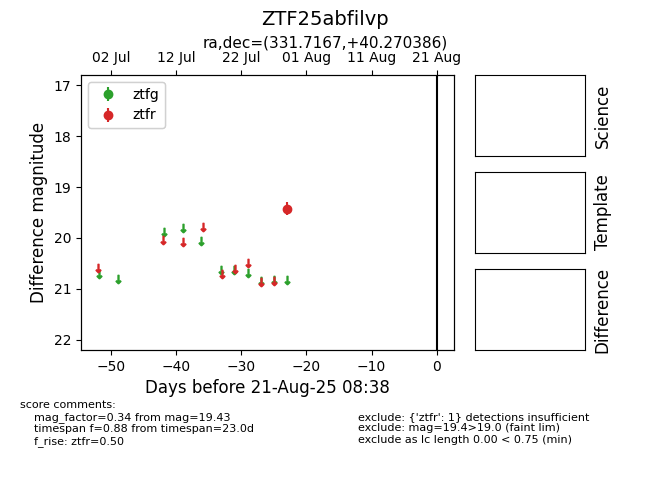

Target ZTF25abfilvp at 2025-08-21 08:38, see:
FINK: fink-portal.org/ZTF25abfilvp
Lasair: lasair-ztf.lsst.ac.uk/objects/ZTF25abfilvp
ALeRCE: alerce.online/object/ZTF25abfilvp
alt names
ZTF25abfilvp (ztf,alerce)
coordinates:
equatorial (ra, dec) = (331.7167,+40.27039)
galactic (l, b) = (91.9866,-12.51164)
photometry
last ztfr=19.43
1 ztfr detections
